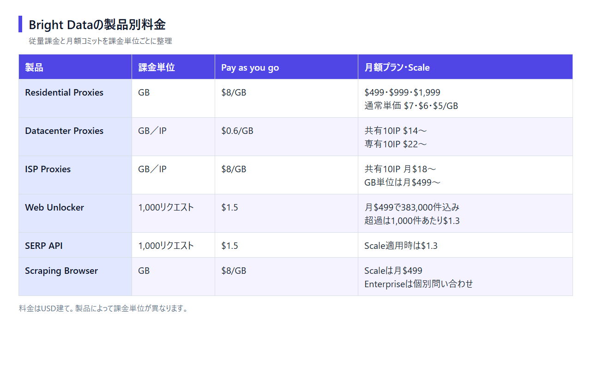

Bright Dataの料金プラン｜無料枠・課金単位・日本からの支払いを解説
Webサイトから商品情報や検索結果を集める企業向けのデータ収集基盤が、Bright Dataです。この記事では、製品ごとに異なる料金や無料枠に加え、日本からの支払い方法と解約条件も取り上げます。
Bright Dataの料金プランは6製品・3つの課金単位
- Residential：$8/GB／無料枠なし／GB課金
- Datacenter：$0.6/GB／無料枠なし／GB・IP課金
- ISP：$8/GB／無料枠なし／GB・IP課金
- Web Unlocker：$1.5/千件／無料枠あり／リクエスト課金
- SERP API：$1.5/千件／無料枠あり／リクエスト課金
- Scraping Browser：$8/GB／無料枠あり／GB課金
迷ったら、無料クレジットで試し、Pay as you goで少量から始められるBright Dataがおすすめです。
料金ページでは、製品別の課金単位と従量課金・月額コミットの条件を見比べられます。
Bright Dataの料金プランを製品別に整理

日本語の公式サイトには、「無料で開始」と「クレジットカードは必要ありません」の案内があります。
料金はUSD建て。製品ごとに従量課金と月額コミットの条件が異なります。 期間限定の割引は通常料金と分け、契約時は総額と単価を併せて見てください。

Residential・Datacenter・ISP Proxies
- Residential Proxies：Pay as you goは$8/GB。月額プランは$499、$999、$1,999で、通常単価は順に$7/GB、$6/GB、$5/GB
- Datacenter Proxies：Pay as you goは$0.6/GB。共有IPの月額プランは10IPで$14から、専有IPは10IPで$22から
- ISP Proxies：Pay as you goは$8/GB。共有IPは10IPで月$18から、GB単位の月額プランは$499から
Residentialの通常の月額プランに含まれるGB数は、割引価格の画面だけでは読み取れません。この記事に載せたのは、確認できた月額と通常単価だけ。Mobile Proxiesも具体的なGB単価が分からないため、数値を載せていません。
Web Unlocker・SERP API
- Web Unlocker：Pay as you goは1,000リクエストあたり$1.5。Scaleは月$499で383,000リクエスト込み、超過分は1,000件あたり$1.3
- SERP API：Pay as you goは1,000リクエストあたり$1.5。Scale適用時は1,000件あたり$1.3
いずれもリクエスト単位なので、プロキシのGB単価とは分けて見積もります。SERP APIは、確認できた単価だけを載せています。
Scraping Browser
Scraping BrowserのPay as you goは$8/GBで、Scaleは月$499です。Enterpriseの料金は個別見積もり。料金はブラウザ操作の回数ではなく、通信量で決まります。テスト時には、処理件数とGB消費量を一緒に記録してください。
料金画面で課金単位・月額コミット・超過単価を比べると、想定量に合うプランを選びやすくなります。
無料で使える範囲と無料トライアルの違い
全製品を無制限に使える無料プランはありません。 毎月5,000の無料クレジットが新規アカウントに付き、対象製品で残高を共有します。プロキシのトライアルとは別制度です。
月5,000リクエストまで使える製品
Web Unlocker APIとSERP APIでは、1リクエストにつき1クレジットを消費します。Web Scraper APIは、1レコードにつき1クレジット。月5,000クレジットの無料枠なら、カード登録なしで対象機能を試せます。
5,000クレジットは、各製品にそれぞれ付く仕組みではありません。同じアカウントの対象製品で共通の枠を使います。
Scraping Browserは月5,000クレジットまで
Scraping Browserに相当するBrowser APIは、データ量に応じて無料クレジットを消費します。毎月の5,000クレジットで使える量は、約1GBが目安。Web UnlockerやSERP APIとは消費単位が異なりますが、無料クレジットの残高は共通です。
プロキシは無料トライアルの条件を申し込み前に確認
Datacenter・ISP・Residential Proxiesは、月5,000クレジットの無料枠の対象外です。新規登録時の一回限りのトライアルは別枠で、毎月付与される無料枠とは異なります。
Residential Networkや特別なアクセス権限には、原則としてKYCが必要です。robots.txtに従うImmediate Residential Accessは例外で、KYCは不要。申し込み前に、使いたいアクセス方式が審査対象かを調べておきましょう。
料金ページでは、無料クレジットの対象製品と消費単位が分かり、試用後の金額も見積もれます。
従量課金と月額プランは利用量で選ぶ
Pay as you goの見積額が月額コミットに近づいたら、プランを比べ直す時期です。 月額プランでは、単価に加えて未使用分を繰り越せない点も判断材料になります。
利用量が読めない段階はPay as you go
Residential・Datacenter・ISP ProxiesではPay as you goを選べます。月額コミットメントは不要です。Web Unlocker・SERP API・Scraping Browserも従量課金の対象。利用を始めたら、GBまたはリクエスト数を記録します。
無料クレジットの対象製品では、まず処理量を測り、超過分の費用をPay as you goの単価で算出します。プロキシは無料クレジットの対象外なので、従量課金の条件を別に調べます。
利用量が安定したら月額コミットを検討
ResidentialのPay as you goは$8/GB。月額プランの通常単価は$7/GB、$6/GB、$5/GBですが、最小の月額コミットは$499です。Pay as you goの月間見積額が$499に届かないなら、月額へ切り替えると総支払額が増えます。
月額コミットで月内に使い切れなかった分は、翌月へ繰り越されません。Web Unlockerなどで比べるのは、月額料金・利用量・超過単価の3点。利用量が多い月やEnterprise契約を検討する場合は、個別見積もりを依頼します。
キャンペーン価格と通常価格を分けて確認
料金画面に割引が出ているときは、割引期間と月額コミットを見ます。割引中に表示される利用量を通常プランの条件と見なすと、更新後の予算がずれます。社内見積書の基準は通常料金。期間限定の値引きを別記すると、更新後との差が伝わりやすくなります。
日本からの支払い方法・請求書・税
日本から契約でき、請求通貨はUSDです。 支払いはクレジットカードや各種オンライン決済に対応。大口アカウントでは、Wire Transferも選択肢です。
カード・PayPalなど複数の決済方法に対応
支払いにはクレジットカード・PayPal・Alipay・Payoneerを使えます。Google PayとApple Payにも対応していますが、JCBが使えるかは分かりません。
実際の円支払額は、決済時の換算レートや手数料で変わります。日本円の固定価格ではありません。
銀行振込は一定額以上から
Wire Transferは大口アカウント向け。具体的な最低金額は、公開されている案内だけでは分かりません。利用条件は営業窓口へ問い合わせます。
契約条項には、電子請求書と領収書を受け取れると書かれています。管理画面から領収書をダウンロードする手順は、公開情報だけでは分かりません。日本の適格請求書発行事業者番号も、公開情報では不明。Wire Transferと請求書払いは、別の支払い方法として扱います。社内で必要な書類を決めてから、営業窓口へ伝えましょう。
円換算と税は契約前の表示で確認
USD請求のため、円換算額は為替で変動します。社内稟議の予算上限には、換算レートの変動も織り込みます。決済画面で見るのは、請求通貨と税の表示。消費税・リバースチャージ・仕入税額控除の判断が必要なら、税理士に相談してください。
Oxylabs・Decodoと料金の考え方を比べる
API系を無料クレジットで試すなら、Bright Dataが候補です。プロキシも従量課金で始められます。Residentialの低額な月額プランを探すなら、OxylabsまたはDecodo。 法人向けの試用条件を重視するなら、Oxylabsと比べてください。
Bright Data：無料枠と従量課金から始められる製品がある
- 無料：API・ブラウザ系の対象製品で、月5,000クレジットを共通利用
- 少量開始：Residential・Datacenter・ISP ProxiesなどにPay as you goがある
- 月額契約：ResidentialとISPのGB単位プランは月$499から
無料クレジットとPay as you goの両方を、すべての製品で使えるわけではありません。API・ブラウザ系とプロキシでは、申し込み時に選べる料金が異なります。
ページでは、APIの無料枠とプロキシの従量料金を製品ごとに見比べられます。
Oxylabs：月額の段階プランが中心

公式サイトは英語表示で、画面上部に「Pricing」と試用開始の案内が見えます。
- 無料枠：常設無料プランはなし
- 少量開始：Residentialは5GB・月$30から
- 試用：法人は7日間の無料トライアル、個人は3日間の返金保証
Oxylabsでは、Residentialを少量プランから月額契約できます。法人向けトライアルと個人向け返金保証は別条件なので、「誰でも7日間無料」ではありません。
ページでは、Residentialの段階プランと、法人・個人で異なる試用条件を見比べられます。
Decodo：少量プランとPay As You Goを選べる

公式サイトは英語表示で、無料で始める案内とGoogleアカウントで登録するボタンが見えます。
- 無料枠：常設無料プランはなし
- 少量開始：Residentialは3GB・月$11.25＋VATから、Wallet制のPay As You Goは$4/GB
- 試用：Residentialは3日間・100MB。終了後は有料プランへ自動移行
Decodoは旧Smartproxyで、Residentialの最小月額を抑えたい人向けです。1GB単位のPay As You Goも選択肢。3日間の無料トライアルには、通常プランの14日間返金保証が適用されません。
ページでは、Residentialの最小月額とWallet制の1GB単位料金を見られます。
KYC・解約・ダウングレード・返金条件
月額契約の前に、KYCが必要なアクセス方式を調べます。解約前に押さえたいのは、書面通知の要否と返金されない条件。 特にResidentialは、選ぶアクセス方式によってKYCの要否が異なります。
Residential ProxiesなどはKYCが必要
Residential Networkや特別なアクセス権限を利用するには、原則としてKYCが必要です。認証対象は、登録企業と企業ドメインのメール。申請時には利用目的と連絡先も求められ、審査状況の更新まで最大48時間かかります。
身分証明書やビデオ通話は追加で求められる場合もありますが、全員が提出するものではありません。robots.txtに従うImmediate Residential Accessは例外で、KYCは不要。個人で申し込めるかは、製品とアクセス方式によって異なります。
固定期間のない契約は書面通知で解約できる
固定期間を別に定めていない契約は、書面による事前通知で解約できます。契約の終了日は、相手方が通知を受領した暦月の末日。管理画面の操作だけで、すべての請求が止まるわけではありません。
ダウングレードする前に、次回請求日と契約期間を調べます。通知方法も契約内容と照らし合わせます。
サブスクリプション料金は返金不可
Master Service Agreementでは、サブスクリプション料金は解約不可・返金不可。契約終了時には、収集済みで未提供のデータの対価を含む未払額が支払期限を迎えます。未収集データの料金まで返金されないという意味ではありません。
月額コミットへ移る前に、対象製品・契約期間・見込み利用量を見直してください。未使用コミットは翌月へ繰り越されないため、契約額が余っても返金による調整はできません。
Residentialを選ぶなら、料金に加え、アクセス方式に応じたKYCと契約終了条件も確かめてください。
Bright Dataの料金でよくある質問
無料クレジットと支払いに加え、日本語対応と個人契約の条件をQ&Aでまとめました。
Bright Dataにずっと使える無料プランはある？
全製品で継続して使える無料プランはありません。新規アカウントに付くのは、API・ブラウザ系の対象製品で共有する毎月5,000の無料クレジット。プロキシ製品のトライアルは別制度です。
日本のカードや日本円で支払える？
日本からカードなどで支払えます。請求通貨はUSDで、JCBなどカードブランドごとの対応は不明。日本円の支払額は、換算レートや手数料の影響を受けます。
個人でも契約できる？
製品とアクセス方式によって条件が異なります。Residential NetworkなどのKYC申請では、登録企業と企業ドメインのメールが認証対象です。ただし、Immediate Residential Accessは例外で、KYCは不要。申し込む前に、希望する製品とアクセス方式でKYCが必要かを確かめてください。
日本語の料金ページやサポートはある？
公式日本語サイトと日本語の料金ページがあります。管理画面全体の日本語UI対応範囲は、公開情報だけでは分かりません。
公式サイトでは、日本市場向けに24時間の専門家支援を案内しています。ただし、日本語のチャットやメールへの対応は明記なし。サイトが日本語でも、管理画面や問い合わせまで日本語だとは判断できません。
まとめ：無料枠で試し、利用量が見えてから有料化する
製品を選んだら、課金単位と月間利用量でプランを絞ります。 API・ブラウザ系の対象製品は無料クレジットから、対象プロキシを含む各製品はPay as you goから試せます。
契約前に確認する5項目
- 集めたいデータに合う製品はプロキシ、API、Scraping Browserのどれか
- 課金単位はGB、IP、リクエストのどれか
- 無料クレジットまたは従量課金で想定利用量を測れるか
- カードなどの支払い方法とUSD請求を社内処理できるか
- KYC、解約通知、返金不可、未使用分の非繰越を受け入れられるか
迷ったら無料枠か従量課金から始める
API・ブラウザ系は、共通の無料クレジットから試します。Residential・Datacenter・ISP Proxiesなどでは、Pay as you goから始めます。月額コミットへの切り替えは、従量課金の見積額が契約額に近づく頃。未使用分は翌月へ繰り越せません。月額コミットを使い切れる量かどうかも確かめてください。
料金ページで課金単位と開始条件を調べたら、無料枠か従量課金で月間利用量を測れます。